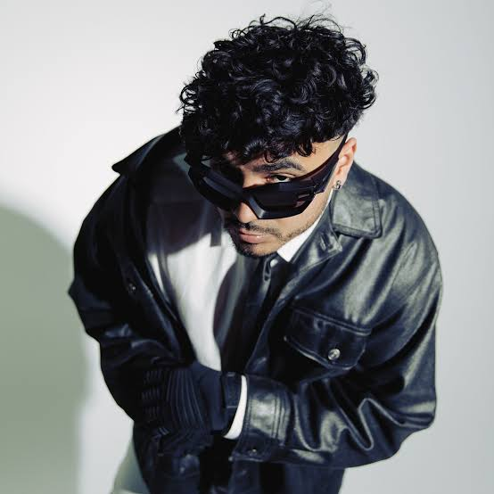

Biografía y Estilo
Jorge Álvaro Díaz Rodríguez, conocido artísticamente como Álvaro Díaz, es un rapero y compositor puertorriqueño. Su propuesta destaca por fusionar letras nostálgicas sobre el despecho con conceptos visuales inspirados en la moda streetwear y el cine.
